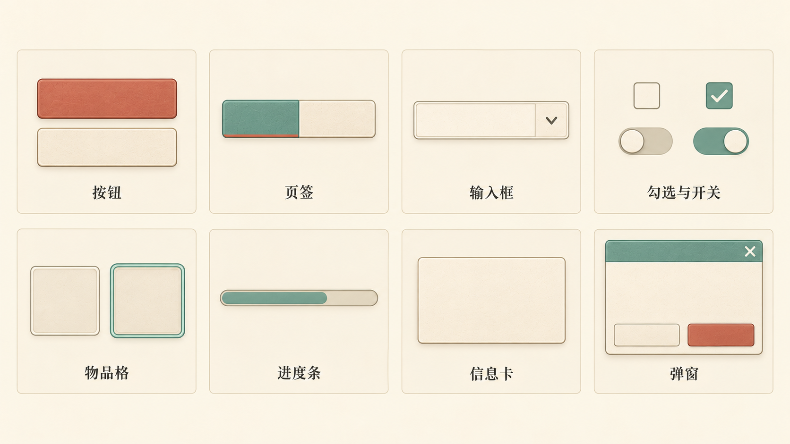
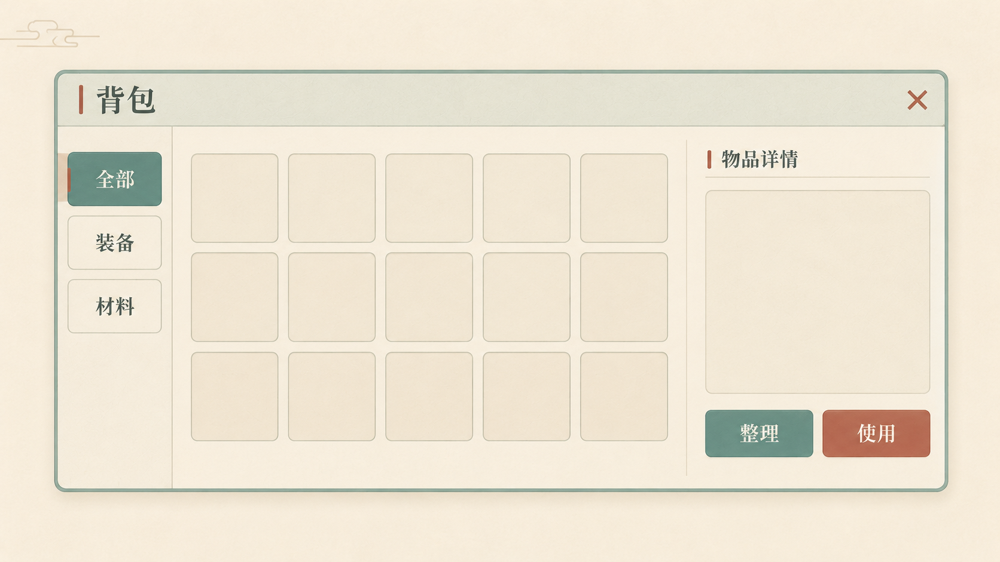

克制纸艺·常用UI样式板
原图1672×941 · 设计基准1920×1080 · 整体效果参考，未拆分控件
按钮、页签、输入框、勾选开关、物品格、进度条、信息卡和弹窗使用规则轮廓和薄边，花枝与厚云框已去掉，保留轻纸纹、青绿/朱砂状态差异；图中名称用于展示，尚未生成独立控件PNG。
原图
克制纸艺·背包界面
原图1672×941 · 设计基准1920×1080 · 整体效果参考，未拆分控件
背包改为薄青绿边框、纸白内容面、左侧三页签、5×3空格及右侧详情，外围只有少量淡云线。对比上一版明显减少装饰，布局更清晰；仍是整体效果图，未实现UI或拆分资源。
原图